Welcome to my Website :)
𝄞 ABOUT ME 𝄢
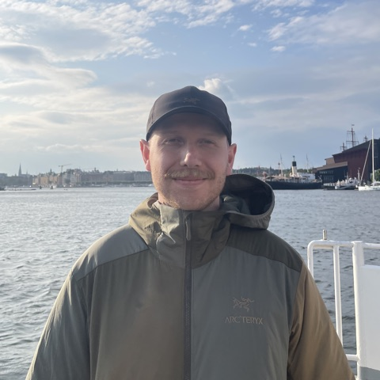 |
hi i'm brandon. i'm a music producer and songwriter who dabbles in audio plugin development. i also enjoy birdwatching and movies. currently based in nyc. |
♫ ♫
music i've contributed to. press play!!!
★ ALBUM OUT NOW ★
“flutter” by frau
executive produced & co-written by me
♮ PLUGINS ♮
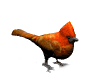
>> BIRDSONG <<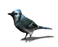
NEW!new company with nathan blair
Loading scene…
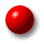
>> GUMROAD <<get gooper here
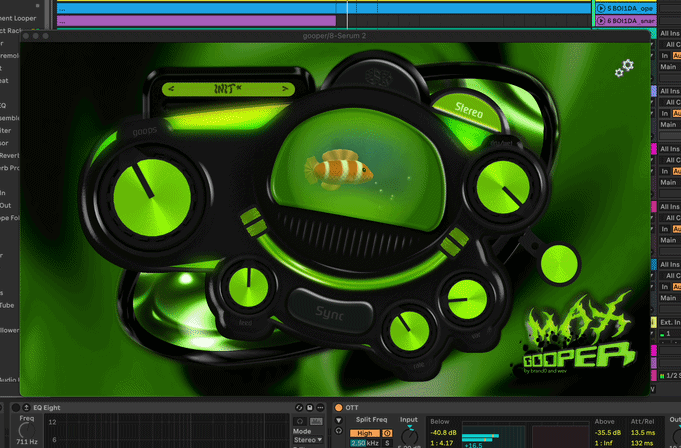
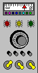
>> LIMINAL <<built this cool device for FlickSwitch Audio
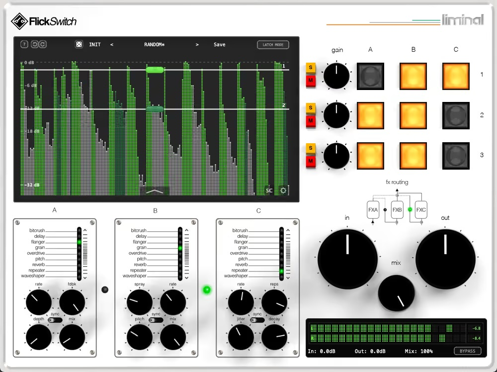
𝄪 CONTACT 𝄪
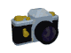
instagram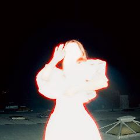
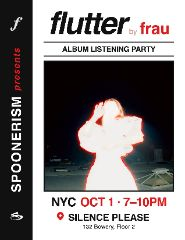
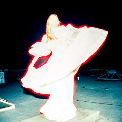
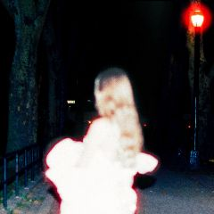
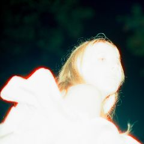
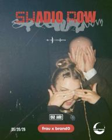
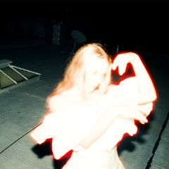
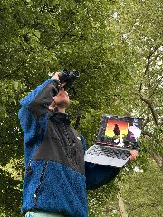
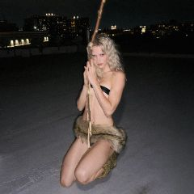
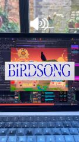
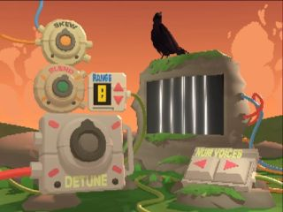
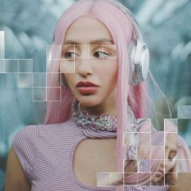
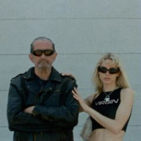
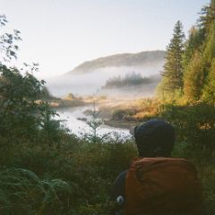
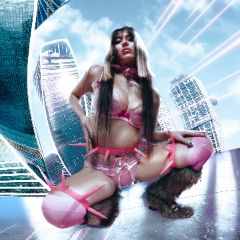
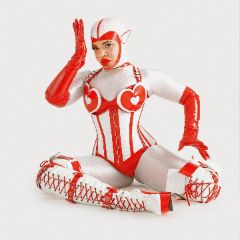
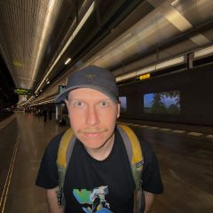
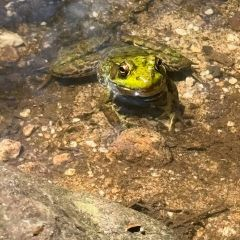
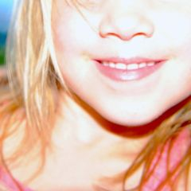
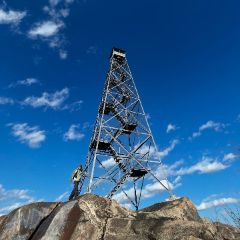
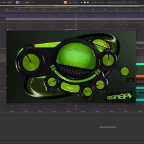
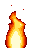
ebird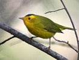
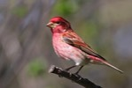
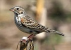
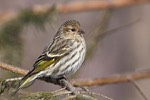
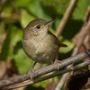
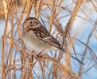
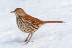
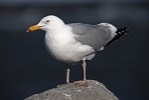
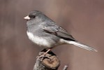
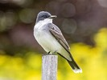
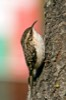
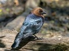
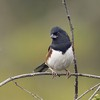
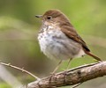
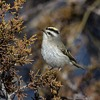
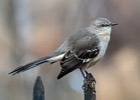
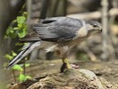
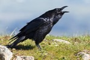
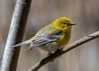
★ BIRD OF THE MONTH ★
 |
Ruby-crowned Kinglet october 2026 these little guys have been bringing me a lot of joy this month. i figured i would shout them out. as fall birding slowly creeps into full time sparrowing these guys hold it down. |
✠ POETRY ✠ ▼
stay for a poem?
The Valley of Unrest
~ by Edgar Allan Poe ~
✠ ✟ ✠
Once it smiled a silent dell
Where the people did not dwell;
They had gone unto the wars,
Trusting to the mild-eyed stars,
Nightly, from their azure towers,
To keep watch above the flowers,
In the midst of which all day
The red sun-light lazily lay.
Now each visitor shall confess
The sad valley’s restlessness.
Nothing there is motionless —
Nothing save the airs that brood
Over the magic solitude.
Ah, by no wind are stirred those trees
That palpitate like the chill seas
Around the misty Hebrides!
Ah, by no wind those clouds are driven
That rustle through the unquiet Heaven
Uneasily, from morn till even,
Over the violets there that lie
In myriad types of the human eye —
Over the lilies there that wave
And weep above a nameless grave!
They wave: — from out their fragrant tops
Eternal dews come down in drops.
They weep: — from off their delicate stems
Perennial tears descend in gems.
✠ ✟ ✠
“Bright star, would I were stedfast as thou art”
by John Keats
Bright star, would I were stedfast as thou art—
Not in lone splendour hung aloft the night
And watching, with eternal lids apart,
Like nature’s patient, sleepless Eremite,
The moving waters at their priestlike task
Of pure ablution round earth’s human shores,
Or gazing on the new soft-fallen mask
Of snow upon the mountains and the moors—
No—yet still stedfast, still unchangeable,
Pillow’d upon my fair love’s ripening breast,
To feel for ever its soft fall and swell,
Awake for ever in a sweet unrest,
Still, still to hear her tender-taken breath,
And so live ever—or else swoon to death.
A Burnt Ship
~ by John Donne ~
Out of a fired ship, which by no way
But drowning could be rescued from the flame,
Some men leap’d forth, and ever as they came
Near the foes’ ships, did by their shot decay;
So all were lost, which in the ship were found,
They in the sea being burnt, they in the burnt ship drown’d.
𝄆 ??? 𝄇
⛆⛆ 𖣘 ↻↻↻ ᴛʜᴇ ʙʟᴀᴅᴇꜱ ɴᴇᴠᴇʀ ꜱᴛᴏᴘ ⟳⟳ ☂ ╱╱╱╱ 7 ʏᴇᴀʀꜱ ᴀɢᴏ ᴛʜᴇ ᴡᴇʟʟ ᴡᴇɴᴛ ᴅʀʏ ✝ ◐◓◑◒ w̷̢i̴͝n̸d̵̗m̶͘i̷l̴̡l̸ ꙮ ☁︎☁︎☁︎ ᵈʳⁱᵖ ᵈʳⁱᵖ ᵈʳⁱᵖ ⛈ ✣✣ 𝔤𝔬 𝔞𝔯𝔬𝔲𝔫𝔡 𝔞𝔫𝔡 𝔞𝔯𝔬𝔲𝔫𝔡 ⟲ ☔︎ ¿ʀᴀɪɴ? 𓂀 ╲╲╲╲ ▒▓░ ⛆
𝄐 THE END 𝄐
Rock Pigeon
Mourning Dove
Cooper's Hawk
Red-bellied Woodpecker
Blue Jay
Ruby-crowned Kinglet
European Starling
Hermit Thrush
House Sparrow
Chipping Sparrow
Dark-eyed Junco
White-throated Sparrow
Song Sparrow
Yellow-rumped Warbler
Downy Woodpecker
American Crow
Golden-crowned Kinglet
American Robin
Common Grackle
Double-crested Cormorant
Yellow-bellied Sapsucker
Northern Flicker
Eastern Phoebe
Northern Mockingbird
Blackpoll Warbler
Pine Warbler
Blue-headed Vireo
Field Sparrow
Swamp Sparrow
Eastern Towhee
Black-and-white Warbler
Tennessee Warbler
House Finch
Ovenbird
Red-tailed Hawk
Northern House Wren
Gray Catbird
Common Yellowthroat
Brown Creeper
Cedar Waxwing
American Redstart
American Herring Gull
Brown Thrasher
American Kestrel
Eastern Wood-Pewee
Black-throated Blue Warbler
Red-eyed Vireo
Scarlet Tanager
Northern Parula
Black-throated Green Warbler
Canada Goose
Yellow-billed Cuckoo
Palm Warbler
Chimney Swift
Swainson's Thrush
Northern Waterthrush
Cape May Warbler
Magnolia Warbler
White-eyed Vireo
Lincoln's Sparrow
Baltimore Oriole
Merlin
Ring-billed Gull
Red-winged Blackbird
Northern Yellow Warbler
Chestnut-sided Warbler
Northern Cardinal
Northern Harrier
Fish Crow
Bay-breasted Warbler
Great Blue Heron
Wood Thrush
Canada Warbler
Rose-breasted Grosbeak
Gray-cheeked Thrush
Veery
Peregrine Falcon
Ruby-throated Hummingbird
Blackburnian Warbler
Osprey
Bald Eagle
American Goldfinch
Laughing Gull
Barn Swallow
Blue-gray Gnatcatcher
Olive-sided Flycatcher
Green Heron
Great Crested Flycatcher
Yellow-bellied Flycatcher
Killdeer
Summer Tanager
Least Flycatcher
Blue-winged Warbler
Eastern Kingbird
Eastern Warbling Vireo
Acadian Flycatcher
Nashville Warbler
Wilson's Warbler
Northern Rough-winged Swallow
Prothonotary Warbler
Worm-eating Warbler
Carolina Wren
Great Black-backed Gull
Indigo Bunting
Tree Swallow
Orchard Oriole
Hooded Warbler
Prairie Warbler
Savannah Sparrow
Snowy Egret
Common Raven
Tufted Titmouse
Purple Finch
American Woodcock
Fox Sparrow
Brant
White-breasted Nuthatch
Yellow-breasted Chat
Winter Wren
Red-breasted Nuthatch
Belted Kingfisher
Philadelphia Vireo
Mourning Warbler
Yellow-throated Vireo
Willow Flycatcher
Mallard
Common Nighthawk
Great Egret
Yellow-crowned Night Heron
American Bittern
Mute Swan
Black-capped Chickadee
Turkey Vulture
Wild Turkey
White-crowned Sparrow
Black-billed Cuckoo
Brown-headed Cowbird
Sharp-shinned Hawk
Hairy Woodpecker
Common Tern